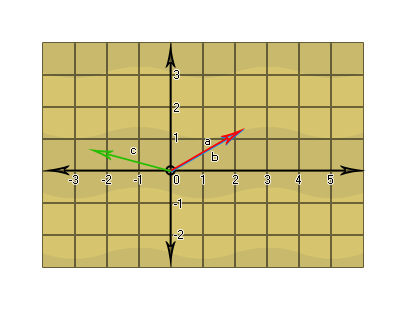

Au moment de créer un jeu de n'importe quelle complexité, vous devrez probablement faire face à des vecteurs. Ils sont utilisés en physique, en IA, en trigonométrie et bien d'autres situations, mais qu'est-ce qu'un vecteur? Eh bien, pour le dire simplement, un vecteur est une quantité dirigée. Commençons par regarder un vecteur 1 dimension, qui est juste le même qu'un seul nombre, en traçant une ligne numérotée avec une flèche commençant à zéro et se terminant à 5. C'est le vecteur a qui est égal à 5 et si nous dessinons une autre flèche partant du 5 et finissant au 8 nous avons le vecteur b qui est égal à 3. 
Vous devez vous rendre compte que peu importe où commence un vecteur, tout ce qui compte, c'est combien de temps et dans quelle direction il va. Donc le vecteur b commence à 5, est long de 3 unités et pointe vers le "droit", le rendant identique à un vecteur commençant par 0 et passant à 3. Maintenant, vous pouvez aussi ajouter ces vecteurs ensemble, en mettant bout à bout les deux vecteurs a et b pour obtenir le vecteur c qui est égal à 8. Qu'en est-il des nombres négatifs? Eh bien, si, dans l'image ci-dessus, un vecteur qui pointe vers le "droit" correspond à un nombre positif, vous pouvez voir qu'un vecteur pointant vers "gauche" correspondrait à un nombre négatif, ce qui rendrait un vecteur unidimensionnel plus qu'un nombre signé (+/-). Ceci explique le concept essentiel d'un vecteur: seule la longueur et la direction ("gauche" ou "droite" dans ce cas) comptent, pas la position.
Alors, qu'en est-il des vecteurs 2 dimensions? Eh bien, nous pouvons les considérer comme consistant non seulement en "gauche" et "droite", mais aussi en "haut" et "bas": 
Maintenant, ce ne sont pas encore des vecteurs, car nous devons encore les réduire en utilisant leurs coordonnées de début et de fin. En regardant le vecteur a, nous pouvons voir qu'il a une coordonnée de départ de [2,2] et une coordonnée de fin de [4,3] et donc pour obtenir le vecteur de ceci, nous devons le réduire en soustrayant les coordonnées de fin depuis le début coordonne comme ceci: [(x2-x1), (y2-y1)] = [(4-2), (3-2)] = [2,1]. Faisons de même pour le vecteur b maintenant: [(-1.2 - (- 3.2)), (2.1 - 1.1)] = [2, 1]. Remarquez quelque chose? Ces deux vecteurs sont les mêmes! Ceci est encore une autre démonstration qu'un vecteur n'a pas de position, seulement la direction et la longueur, et nous pouvons dessiner ces vecteurs les uns par rapport aux autres autour d'un axe local [0,0]: 
Cela signifie qu'un vecteur 2D est défini par deux valeurs, une position x et une position y par rapport à l'axe local [0,0]. Et qu'en est-il des vecteurs 3D? Eh bien, ils ont la dimension supplémentaire de «profondeur» à prendre en compte et seraient calculés comme des positions x, y et z autour d'un axe local quelque chose comme ceci: